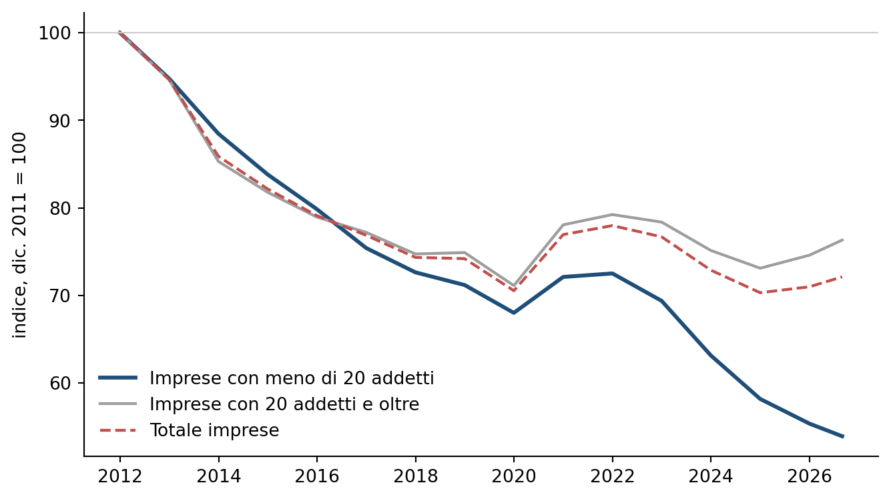
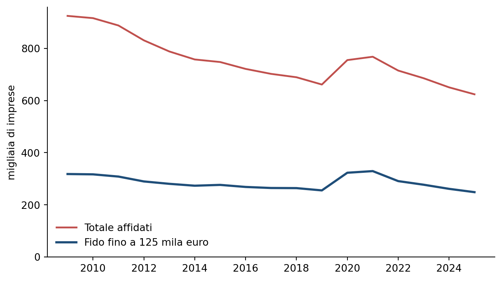
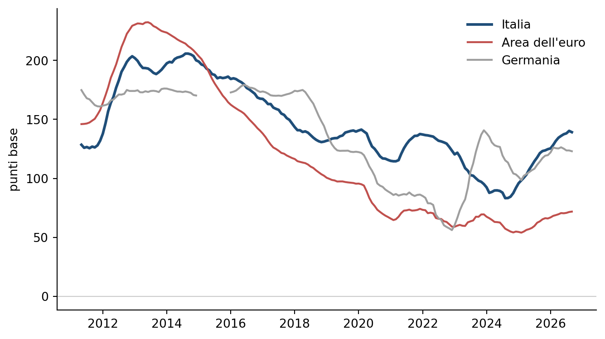

Molte, piccole, sottofinanziate: il credito alle microimprese
Aggiornamento di novembre 2026: Centrale dei rischi, indagine BCE sull’accesso al finanziamento, tassi per importo del prestito
Paolo Volterra ![]()
Italiano. Le imprese con meno di venti addetti sono il 98% delle imprese italiane, danno lavoro a metà degli occupati e producono un terzo del valore aggiunto, ma ricevono meno del 15% dei prestiti bancari alle imprese. Dal 2024 la distanza si è allargata: il credito alle imprese nel loro insieme ha ripreso a crescere, quello alle imprese sotto i venti addetti ha continuato a scendere. I dati della Centrale dei rischi mostrano la stessa asimmetria dal lato dei singoli rapporti: le imprese con un fido fino a 125 mila euro sono due affidati su cinque, ricevono meno del 2% del credito e lavorano in media con una sola banca. Il quadro è coerente con un’economia del piccolo prestito sfavorevole alla banca, fatta di costi fissi di valutazione e di opacità informativa. L’indagine della Banca centrale europea sull’accesso al finanziamento aggiunge il lato della domanda: rispetto a dieci anni fa meno microimprese chiedono un prestito, molte di più dichiarano di bastare a sé stesse con i fondi interni, e i rifiuti sono rari. L’offerta pesa sul prezzo: un prestito fino a 250 mila euro costa oltre un punto percentuale più di uno sopra il milione, una differenza tornata a crescere e più ampia della media dell’area dell’euro. Le garanzie pubbliche coprono ancora più di un quinto dei prestiti alle imprese, ma la loro incidenza è in calo dal 2021.
English. Firms with fewer than twenty employees account for 98% of Italian enterprises, half of employment and one third of value added, yet they receive less than 15% of bank loans to firms. Since 2024 the gap has widened: lending to firms as a whole has resumed growing, while lending to firms below twenty employees has kept falling. Central Credit Register data show the same asymmetry at the level of individual credit relationships: firms with a credit line of up to 125 thousand euro are two borrowers out of five, receive less than 2% of credit and on average deal with a single bank. The picture is consistent with small-loan economics that are unfavourable to the lender, driven by fixed screening costs and informational opacity. The ECB Survey on the Access to Finance of Enterprises adds the demand side: compared with ten years ago, fewer micro firms apply for a bank loan, many more report sufficient internal funds, and rejections are rare. Supply weighs on price: a loan of up to 250 thousand euro costs more than one percentage point more than a loan above one million, a gap that has widened again and is larger than the euro area average. Public guarantees still cover more than one fifth of loans to firms, but their share has been declining since 2021.
microimprese, credito bancario, Centrale dei rischi, indagine SAFE, premio del piccolo prestito, classe di accordato, costo fisso istruttoria, opacità informativa, garanzie pubbliche
Questo studio aggiorna e corregge la versione di luglio 2026, con i dati fino al 2026 e due fonti nuove sul lato della domanda e del prezzo del credito.
1 L’asimmetria di partenza
Le imprese con meno di venti addetti sono quasi tutte le imprese italiane, ma ricevono una piccola parte del credito bancario. Il confronto si può fare con la stessa soglia dimensionale su due fonti ufficiali: le statistiche strutturali sulle imprese di Eurostat, per numero di imprese, occupati e valore aggiunto, e la Base dati statistica della Banca d’Italia, per i prestiti alle imprese ripartiti per classe di addetti [1], [2].
| Grandezza | Meno di 20 addetti | di cui meno di 10 | Riferimento |
|---|---|---|---|
| Numero di imprese | 98,0% | 94,8% | 2024 |
| Occupati | 50,2% | 39,9% | 2024 |
| Valore aggiunto | 33,8% | 25,2% | 2024 |
| Prestiti bancari alle imprese | 14,6% | n.d. | dicembre 2025 |
| Prestiti bancari alle imprese | 14,0% | n.d. | agosto 2026 |
Tabella 1: Peso delle imprese con meno di 20 addetti, Italia. Imprese, occupati e valore aggiunto: economia di mercato non finanziaria, Eurostat. Prestiti: prestiti bancari alle imprese, esclusi pronti contro termine e sofferenze, Banca d’Italia.
In parole semplici: quasi tutte le imprese italiane hanno meno di venti addetti e occupano metà dei lavoratori, ma ricevono circa un settimo dei prestiti che le banche fanno alle imprese.
Il divario fra numero e volume non è di per sé un’anomalia. Un’impresa piccola ha bisogno di importi piccoli, e la quota di credito non va letta come un indice di equità. Il confronto più significativo è con il valore aggiunto: le imprese sotto i venti addetti producono circa un terzo del valore aggiunto, più del doppio della loro quota di credito. Una parte della distanza riflette la minore produttività delle imprese più piccole, che in Italia è particolarmente bassa nel confronto internazionale [3].1
2 La contrazione colpisce di più i più piccoli

Figura 1: Prestiti bancari alle imprese per classe di addetti, Italia, dicembre di ogni anno e ultimo mese disponibile, indice dicembre 2011 = 100. Banca d’Italia, Base dati statistica.
In parole semplici: dal 2011 i prestiti alle imprese sono calati per tutti, ma per le imprese più piccole molto di più; negli ultimi due anni le imprese più grandi hanno ripreso a ricevere credito, le piccole no.
Fra dicembre 2011 e dicembre 2025 il credito alle imprese con meno di venti addetti è sceso da 171,1 a 94,7 miliardi di euro, con un calo del 44,6%. Nello stesso periodo il credito al totale delle imprese è sceso del 29,0%, da 912,2 a 647,6 miliardi [2].
Negli ultimi due anni le due serie hanno preso direzioni diverse. Fra dicembre 2024 e dicembre 2025 il credito al totale delle imprese è cresciuto (+1,0%), mentre quello alle imprese sotto i venti addetti è diminuito (−4,8%). Alla fine di agosto 2026 la quota delle imprese più piccole sul credito alle imprese è scesa al 14,0%, dal 18,8% del 2011 e dal 15,5% della fine del 2024. Nel 2025 i prestiti alle imprese sono tornati ad aumentare [4]; nella ripartizione per classe di addetti l’aumento riguarda soltanto le imprese con venti addetti e oltre, passate da 541,9 a 552,9 miliardi.
3 Il credito visto dai singoli rapporti
La Centrale dei rischi permette di guardare la stessa asimmetria dal lato dei rapporti fra banca e impresa. Le società non finanziarie sono classificate per importo del fido accordato dal sistema bancario, e per ogni classe sono disponibili il numero di imprese affidate, il credito effettivamente utilizzato e il numero medio di banche con cui ciascuna impresa lavora [5]. La classe di fido non coincide con la classe di addetti, ma le imprese con fidi piccoli sono in larga parte imprese piccole. La Centrale dei rischi registra solo i rapporti da 30 mila euro in su, quindi le imprese che hanno soltanto prestiti sotto questa soglia non compaiono.
| Fido accordato | Imprese affidate | % imprese | Credito utilizzato (mld €) | % credito | Banche per impresa |
|---|---|---|---|---|---|
| 30-75 mila | 164.311 | 26,3 | 5,3 | 1,0 | 1,03 |
| 75-125 mila | 84.390 | 13,5 | 5,2 | 1,0 | 1,22 |
| 125-250 mila | 104.377 | 16,7 | 11,5 | 2,1 | 1,45 |
| 250-500 mila | 88.751 | 14,2 | 18,4 | 3,4 | 1,79 |
| 0,5-1 milione | 66.086 | 10,6 | 26,2 | 4,9 | 2,23 |
| 1-2,5 milioni | 54.381 | 8,7 | 46,3 | 8,6 | 2,90 |
| 2,5-5 milioni | 22.716 | 3,6 | 42,9 | 8,0 | 3,80 |
| 5-25 milioni | 20.077 | 3,2 | 105,9 | 19,7 | 5,28 |
| oltre 25 milioni | 4.800 | 0,8 | 275,0 | 51,2 | 8,40 |
| Totale | 623.974 | 100 | 537,5 | 100 | 1,82 |
Tabella 2: Società non finanziarie affidate dalle banche per classe di fido accordato, Italia, dicembre 2025. Banca d’Italia, Centrale dei rischi.
In parole semplici: le imprese con un fido fino a 125 mila euro sono molte, ma usano una quota minima del credito e quasi sempre hanno una sola banca; poche migliaia di imprese con fidi oltre i 25 milioni usano da sole metà del credito.
Alla fine del 2025 le imprese con un fido fino a 125 mila euro erano 248.701, il 39,9% delle società non finanziarie affidate. Insieme utilizzavano 10,5 miliardi di euro (1,9% del credito). All’altro estremo, 4.800 imprese con fidi oltre i 25 milioni (0,8% degli affidati) utilizzavano 275,0 miliardi (51,2% del credito).
Il numero di banche per impresa cresce con la dimensione del fido: da 1,03 nella classe più bassa a 8,40 in quella più alta. L’impresa piccola dipende quindi quasi sempre da una sola relazione bancaria. Ne seguono due conseguenze. Per l’impresa, l’interruzione di quel rapporto significa perdere l’accesso al credito, senza un’alternativa già avviata. Per la banca, il numero di clienti dipende dalla quota di rapporti, non dalla quota di imprese: con 623.974 imprese e 1,82 banche in media per impresa, i rapporti sono circa 1,14 milioni, e una banca con l’1 per mille dei rapporti serve circa 1.136 imprese.

Figura 2: Società non finanziarie affidate dalle banche, Italia, dicembre di ogni anno, migliaia. Totale e imprese con fido fino a 125 mila euro. Banca d’Italia, Centrale dei rischi.
In parole semplici: il numero di imprese che hanno un fido bancario è calato quasi ogni anno dal 2009; l’unica eccezione sono il 2020 e il 2021, gli anni dei prestiti garantiti dallo Stato, quando le piccole imprese affidate sono aumentate.
Il numero di società non finanziarie affidate è sceso da 887.923 nel 2011 a 623.974 nel 2025. Le imprese con fido fino a 125 mila euro sono passate da 308.508 a 248.701. Fra il 2019 e il 2021 queste ultime sono salite da 255.462 a 329.440, nel periodo delle garanzie pubbliche straordinarie, per poi tornare a scendere sotto il livello precedente la pandemia.
4 L’economia del piccolo prestito
Una spiegazione della contrazione viene da un’analisi della Banca d’Italia sull’offerta di credito per dimensione d’impresa prima e dopo la doppia recessione 2008-2013 [6]. Lo studio confronta, per la stessa banca, il credito concesso a imprese di dimensione diversa, e trova che dopo la crisi le banche hanno ristretto le politiche di credito verso tutte le imprese tranne le grandi, con una differenza marcata fra le microimprese e le altre.2 La stretta è stata più forte per le banche grandi e per quelle con bilanci più deboli.
Gli autori la collegano a due caratteristiche del prestito alle imprese più piccole.
- Costo fisso di valutazione. Raccogliere informazioni, valutare e deliberare costa in misura largamente indipendente dall’importo; su un prestito piccolo questo costo pesa di più sul margine atteso.3
- Opacità informativa. Bilanci semplificati e informazioni meno standardizzate rendono più incerta la stima della probabilità di insolvenza, e le banche più avverse al rischio diventano più prudenti.4
Secondo lo stesso studio, la stretta della crisi si è tradotta in un cambiamento persistente degli standard di credito, con uno spostamento dell’offerta di nuovi prestiti dalle imprese più piccole a quelle più grandi [6]. I dati della Centrale dei rischi sono coerenti con questa lettura: il credito alle imprese con fidi piccoli è frammentato in molte posizioni di importo modesto, ciascuna gestita da una sola banca, cioè proprio il tipo di operazione su cui i costi fissi pesano di più.
5 Domanda e offerta: cosa dicono le imprese e quanto costa il piccolo prestito
I dati sui prestiti in essere mostrano quanto credito ricevono le imprese, ma non dicono se le imprese piccole ne chiedono meno o se le banche ne concedono meno. Due fonti della Banca centrale europea aiutano a separare le due cose. La prima è l’indagine sull’accesso delle imprese al finanziamento (Survey on the Access to Finance of Enterprises, SAFE), che chiede alle imprese se hanno domandato un prestito bancario, perché non l’hanno fatto e come è andata la richiesta [7]. La seconda sono le statistiche sui tassi d’interesse bancari, che riportano il tasso sui nuovi prestiti alle società non finanziarie per importo del prestito [8].
L’indagine distingue le microimprese (meno di dieci addetti) dalle piccole, medie e grandi. Le risposte sono ponderate per il numero di occupati delle imprese, quindi descrivono le condizioni di credito pesate per l’importanza economica delle imprese più che per il loro numero.5 Il campione italiano delle microimprese è piccolo e le quote di un singolo semestre oscillano molto; per questo la tabella confronta medie su più semestri.
| Micro, Italia, 2014-2016 | Micro, Italia, 2024-2026 | Micro, area dell’euro, 2024-2026 | Grandi, Italia, 2024-2026 | |
|---|---|---|---|---|
| Ha chiesto un prestito | 27,9 | 18,2 | 14,4 | 42,7 |
| Non ha chiesto: fondi interni sufficienti | 26,4 | 41,0 | 45,8 | 35,3 |
| Non ha chiesto per timore di un rifiuto | 9,3 | 5,1 | 6,2 | 4,0 |
| Fra chi ha chiesto: ottenuto per intero | 55,8 | 67,3 | 58,9 | 84,7 |
| Fra chi ha chiesto: ottenuto in misura limitata | 8,8 | 10,0 | 5,7 | 1,7 |
| Fra chi ha chiesto: respinto dalla banca | 12,0 | 4,4 | 13,2 | 1,4 |
Tabella 3: Prestiti bancari: domanda ed esito per classe dimensionale. Media delle rilevazioni semestrali nei periodi indicati, percentuali di imprese ponderate per occupati. Domanda: imprese per cui il prestito bancario è una fonte rilevante. Esito: imprese che hanno chiesto un prestito. Banca centrale europea, indagine SAFE.
In parole semplici: rispetto a dieci anni fa meno microimprese italiane chiedono un prestito, e molte più dicono di non averne bisogno perché bastano i fondi propri; i rifiuti delle banche sono diventati rari, ma chi chiede ottiene più spesso solo una parte di quanto ha chiesto.
Fra il 2014-2016 e il 2024-2026 la quota di microimprese italiane che hanno chiesto un prestito bancario è scesa dal 27,9% al 18,2%. Nello stesso periodo la quota di quelle che non l’hanno chiesto perché avevano fondi interni sufficienti è salita dal 26,4% al 41,0%, e le imprese scoraggiate, che non hanno chiesto per timore di un rifiuto, sono scese dal 9,3% al 5,1% [7]. Fra le microimprese che hanno chiesto un prestito, quelle respinte dalla banca sono passate dal 12,0% al 4,4%, meno che nella media dell’area dell’euro (13,2%). È invece più alta che nell’area dell’euro la quota di chi ha ottenuto il prestito solo in misura limitata (10,0% contro 5,7%).
Le risposte delle imprese indicano quindi che una parte importante del calo del credito alle imprese più piccole viene dalla domanda: meno imprese chiedono, perché si finanziano con mezzi propri. Il razionamento in senso stretto, cioè la richiesta respinta, è oggi meno frequente che dopo la crisi del debito sovrano. L’offerta pesa piuttosto sulla quantità concessa e, come si vede più avanti, sul prezzo. Le ultime rilevazioni vanno lette con cautela, perché il campione dell’indagine è stato in gran parte rinnovato.6
Il costo del credito si può osservare per importo del prestito. L’importo non coincide con la dimensione dell’impresa, ma i prestiti fino a 250 mila euro vanno in larga parte a imprese piccole e quelli oltre il milione a imprese più grandi; la differenza fra i due tassi è usata in letteratura come misura del premio pagato dalle imprese piccole [11].7 La statistica riguarda le società non finanziarie e non comprende le ditte individuali, che sono una parte rilevante delle microimprese.

Figura 3: Differenza fra il tasso sui nuovi prestiti alle società non finanziarie fino a 250 mila euro e quello sui prestiti oltre 1 milione, punti base, media mobile di 12 mesi. Banca centrale europea, statistiche sui tassi d’interesse bancari.
In parole semplici: in Italia un’impresa che prende in prestito poco paga un tasso più alto di chi prende molto; la differenza si era ridotta dopo il 2015, ma negli ultimi due anni è tornata a crescere ed è più ampia della media europea.
| Paese | Fino a 0,25 milioni | 0,25-1 milione | Oltre 1 milione | Differenza (punti base) |
|---|---|---|---|---|
| Italia | 4,74 | 3,83 | 3,49 | 125 |
| Area dell’euro | 4,43 | 3,99 | 3,64 | 79 |
| Germania | 4,97 | 4,40 | 3,60 | 137 |
| Francia | 4,11 | 3,70 | 3,77 | 34 |
| Spagna | 3,77 | 3,70 | 3,64 | 13 |
Tabella 4: Tasso sui nuovi prestiti alle società non finanziarie per importo del prestito, ultimo mese disponibile, valori percentuali. Banca centrale europea, statistiche sui tassi d’interesse bancari.
In parole semplici: nei paesi considerati un prestito piccolo costa più di un prestito grande; in Italia la differenza è fra le più ampie, in Spagna quasi non c’è.
A settembre 2026 un prestito fino a 250 mila euro costava in Italia il 4,74%, contro il 3,49% dei prestiti oltre il milione: una differenza di 125 punti base, a fronte di 79 nella media dell’area dell’euro [8]. In media d’anno il premio italiano era di 200 punti base nel 2014, è sceso a 92 nel 2024 ed è risalito a 142 nella media dei mesi del 2026 fino a settembre. Uno studio pubblicato nella serie di working paper della Banca centrale europea trova che il potere di mercato delle banche e la debolezza dei loro bilanci fanno crescere il costo del credito per le imprese piccole più che per le grandi, soprattutto quando l’economia rallenta [11].
Le due fonti, lette insieme, danno un quadro più preciso della sola contrazione dei volumi. Le microimprese chiedono meno credito, soprattutto perché più spesso dichiarano di potersi finanziare con mezzi propri. Chi chiede viene respinto di rado, ma ottiene più spesso una parte soltanto e paga un sovrapprezzo che negli ultimi due anni è tornato ad allargarsi. Il prezzo più alto può a sua volta scoraggiare la domanda: le due spiegazioni, domanda e offerta, non si escludono.
6 Le garanzie pubbliche coprono una parte del credito, in calo
Le garanzie pubbliche sono spesso presentate come lo strumento principale per sostenere il credito alle piccole imprese. Secondo la Banca d’Italia, la quota dei prestiti alle imprese assistiti da garanzie del Fondo di garanzia per le piccole e medie imprese e della SACE è salita oltre il 30% nel 2021 e alla fine del 2025 era ancora superiore a un quinto, dopo una riduzione graduale [4].8
Ne discende che circa quattro quinti del credito alle imprese non hanno una garanzia pubblica. La garanzia riduce la perdita attesa della banca su una parte dei prestiti, ma non cambia il costo di valutazione della singola operazione né l’opacità informativa dell’impresa. Il rimbalzo del numero di piccoli affidati nel 2020-2021 coincide con il periodo delle garanzie straordinarie, e il successivo ritorno sotto i livelli del 2019 fa pensare a un effetto temporaneo sull’accesso al credito; i dati per classe di fido, però, non distinguono i prestiti garantiti dagli altri e non permettono di attribuire il rimbalzo alle sole garanzie.
7 Cosa dice, e cosa non dice, questo quadro
- I dati descrivono con precisione la distribuzione del credito: le imprese sotto i venti addetti sono il 98% delle imprese e ricevono meno del 15% dei prestiti; le imprese con fidi piccoli sono due su cinque fra gli affidati e usano meno del 2% del credito.
- Dal 2024 il credito alle imprese più piccole ha continuato a scendere mentre quello al totale delle imprese è tornato a crescere. È un fatto osservato nei dati, non ancora spiegato.
- I dati sui volumi da soli non separano domanda e offerta. Le risposte delle imprese all’indagine della Banca centrale europea indicano che le microimprese italiane chiedono meno credito soprattutto perché più spesso dichiarano fondi interni sufficienti, e che i rifiuti sono oggi rari; l’offerta pesa sulla quantità concessa e sul prezzo, con un premio del piccolo prestito tornato a salire e più alto della media dell’area dell’euro. La letteratura documenta un effetto di offerta per il periodo successivo alla crisi del 2008-2013; oggi la componente di domanda appare più rilevante, ma il campione dell’indagine è piccolo e in fase di rinnovo.
- La statistica sui tassi per importo riguarda le sole società non finanziarie e usa l’importo del prestito come approssimazione della dimensione dell’impresa: le ditte individuali, una parte rilevante delle microimprese, restano escluse.
- Se la causa principale sono i costi di valutazione e l’opacità informativa, gli interventi più pertinenti riguardano l’informazione standardizzata sulle imprese piccole e le tecnologie di valutazione del credito, più che la sola copertura del rischio con garanzie pubbliche.
Nota metodologica
Questo documento nasce dall’interazione di tre componenti. L’autore definisce le domande, esercita il giudizio critico e assume la responsabilità scientifica ed editoriale del risultato. Strumenti di intelligenza artificiale generativa sono impiegati a supporto della ricerca bibliografica, della lettura, della sintesi, della riorganizzazione argomentativa e della revisione del testo. Un’infrastruttura open source sviluppata dall’autore automatizza il reperimento, l’armonizzazione e il controllo dei dati dalle fonti statistiche ufficiali, e mantiene l’elaborazione documentata e riproducibile.
Le fonti sono pubblicamente accessibili e citate con la loro denominazione ufficiale; l’analisi è pertanto integralmente auditabile e replicabile da terzi a partire da esse. Le tabelle e i grafici sono elaborazioni dell’autore: calcoli, aggregazioni, trasformazioni e scelte di rappresentazione sono attribuibili all’autore e non agli enti produttori dei dati.
La responsabilità per le fonti utilizzate, le analisi condotte, le elaborazioni effettuate, le interpretazioni proposte e le conclusioni formulate resta interamente in capo all’autore. L’intelligenza artificiale è stata impiegata come ambiente di supporto cognitivo ed editoriale, non come fonte primaria, autore autonomo o sostituto del giudizio critico.
Bibliografia
7.1 Note
Note
«MSMEs are only 55% as productive as large companies in Italy compared with 60% in advanced economies.» [3, p. 4]↩︎
«A significant difference in credit supply arose between micro-firms and the others.» [6, p. 3]↩︎
«This may reflect the greater difficulties on the part of these financial intermediaries in disbursing loans to firms with a significant degree of informational opacity and with high fixed costs compared with the low unit volume of operations.» [6, p. 3]↩︎
«On the other side, micro-firm opaqueness and the uncertainty surrounding the estimated levels of their default probability may have induced more risk averse banks to be cautious, ceteris paribus, to extend credit to these companies.» [6, p. 22]↩︎
«In the micro dataset and in the reports published by the ECB, the second set of weights is used, as the objective is to measure the effect of access to finance on economic variables.» [9, p. 12]↩︎
«The ongoing substantial change in the sample composition, with first-time respondents accounting for the majority of the sample in this survey round, makes it challenging to interpret the responses to the numerical questions at this stage.» [10]↩︎
«One of the most salient features of the financial fragmentation that occurred during the recent euro area crisis was the dispersion in the spread that opened up between interest rates on small and large loans, which are proxies for loans to small and large enterprises respectively.» [11, p. 2]↩︎
«Partendo da valori inferiori al 5 per cento, ha superato il 30 nel 2021, per poi ridursi gradualmente; alla fine del 2025 era tuttavia ancora superiore a un quinto a causa del perdurare di un sostenuto livello di nuove erogazioni.» [4, p. 177]↩︎
Vedi anche
- Molte, piccole, sottofinanziate: il credito alle microimpreseLe micro e piccole imprese sono circa il 99% delle imprese italiane ma ricevono poco più del 15% del credito bancario alle imprese.
- Condizioni del credito e settore bancarioIl credito alle imprese torna a crescere nel 2026 ma non per tutte: si contrae per le imprese con meno di 20 addetti, mentre la qualità degli attivi bancari resta buona e meno favorevole nel portafoglio PMI.
- L’alfabetizzazione finanziaria delle microimprese italianeL’indagine 2025 della Banca d’Italia sull’alfabetizzazione finanziaria dei titolari di microimpresa, condotta su cinquemila imprenditori, restituisce un segmento con conoscenze finanziarie superiori a quelle della popola